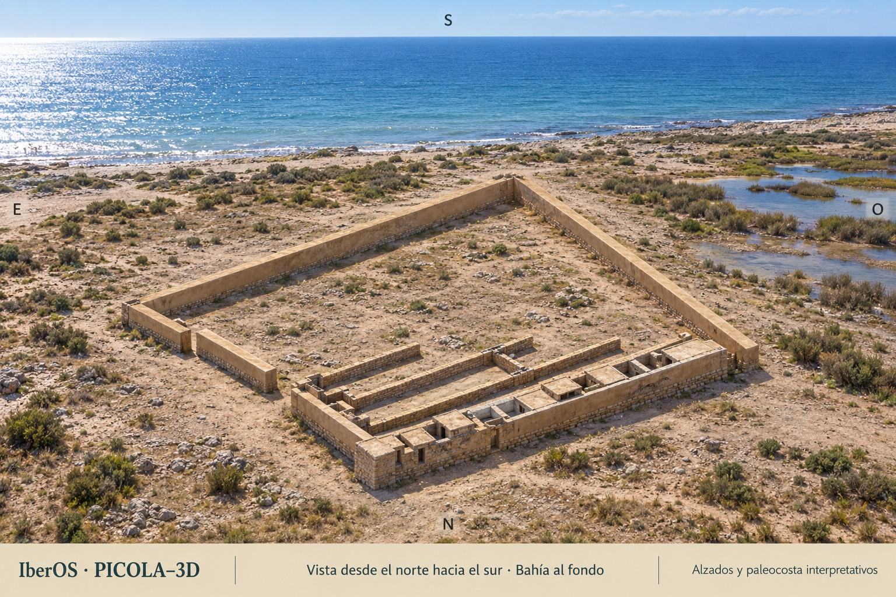
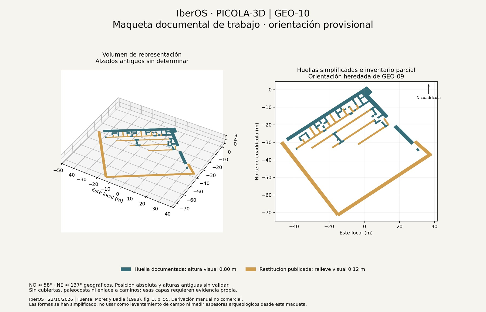
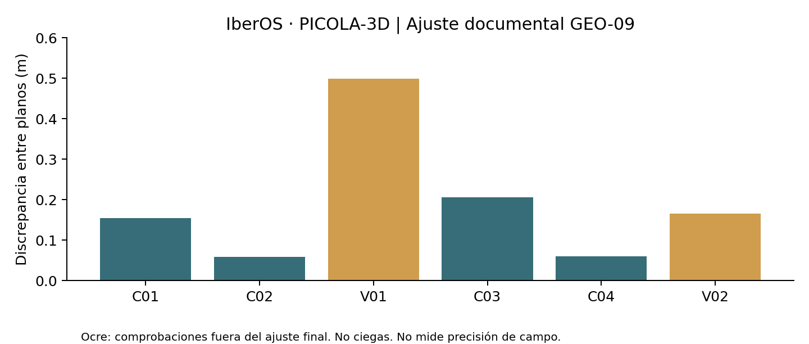

La Picola: reconstrucción documental y paisaje litoral
Reconstrucción de trabajo, no definitiva. Distinguimos estructuras documentadas, restituciones publicadas e hipótesis visuales. La orientación es provisional; los alzados y la paleocosta requieren comprobación propia.
IberOS · PICOLA-3D | Proyecto en desarrollo | Actualizado: 22 de octubre de 2026
La Picola, en Santa Pola, es el punto de partida de un proyecto de reconstrucción que combina bibliografía arqueológica, planos históricos y una maqueta tridimensional revisable. Nuestro objetivo es explicar la arquitectura del recinto ibérico y su relación con el paisaje litoral, haciendo visible qué está documentado y qué sigue siendo una hipótesis.

IberOS · PICOLA-3D. Ilustración generada con IA, guiada por el modelo documental. Alzados, cubiertas y paleopaisaje interpretativos. La imagen no es un levantamiento ni permite medir distancias.
Lo que hemos avanzado
Hemos recuperado y contrastado la planta de Moret y Badie de 1998 con la referencia documental YARQ_2 del Plan Director de La Picola. El ajuste propone orientaciones de trabajo de aproximadamente 58° y 137° para los dos lados estudiados, sin forzar la planta a un cuadrado perfecto.
Cuatro encuentros gráficos sirven para el ajuste final y otros dos para comprobarlo. Estos últimos muestran discrepancias entre dibujos de unos 0,17 y 0,50 m. No fueron pruebas ciegas y no acreditan precisión sobre el terreno. La posición y orientación siguen siendo provisionales hasta contar con controles externos.
La maqueta incluye 63 huellas simplificadas: 41 derivadas de trazos conservados y 22 de restituciones publicadas. Estas piezas no equivalen a 63 estructuras nuevas. Las alturas del visor son recursos de representación, no alzados arqueológicos confirmados.

Maqueta GEO-10. Derivación manual de Moret y Badie (1998), figura 3. Alturas visuales; cotas antiguas pendientes. Uso divulgativo no comercial, con atribución a la fuente.
Un paisaje orientado, todavía por reconstruir
La vista ambiental mira desde el norte hacia el sur, situando el mar al fondo. Esta dirección se controla a partir de la posición del yacimiento y del modelo orientado. La forma y distancia de la orilla antigua, los humedales y la vegetación requieren sus propias evidencias: en la imagen son un escenario interpretativo.
Cómo se ha contrastado la planta
El ajuste final usa una semejanza: giro, escala y traslación. No introduce cizalla ni fuerza ángulos rectos. Un primer ensayo con controles agrupados cerca de A2 se desvió alrededor de un metro en comprobaciones lejanas; el registro conserva ese resultado y el ajuste posterior con referencias más distribuidas.

Los azimuts calculados son 56,956° y 135,922° de cuadrícula; la conversión aproximada al norte geográfico da 58,463° y 137,428°. Sus decimales documentan el cálculo y no representan esa precisión arqueológica. No se han aceptado controles externos de campo.
Decisiones que permanecen abiertas
El artículo de 1998 imprime un ángulo de 110 grados; una transcripción francesa posterior de Moret recoge 110 grades, equivalentes a 99°. Las figuras dan aproximadamente 100° entre las caras seleccionadas. La confusión de unidades es una explicación probable, pendiente del facsímil francés. No se modifica la fuente ni se afirma una errata confirmada.
La puerta NE está documentada en la publicación de 1998; su alzado, cotas y detalles no quedan restituidos como hechos. La posible torre E sigue siendo hipotética. Una zona vacía del modelo significa que no está modelada, no que se haya demostrado una plaza antigua.
REC-63 no se recuperó en esta tanda: GEO-10 es una nueva maqueta parcial. Las comprobaciones entre figuras de la misma publicación no constituyen excavaciones o evidencias independientes.
Qué queda por resolver
Seguimos trabajando en la georreferenciación externa, las cotas y secciones, los alzados, la paleocosta y los accesos. La coordinación con PICOLA-CAMINOS no presupone que un camino moderno o romano tenga origen ibérico ni demuestra una conexión con La Alcudia/Ilici.
El proyecto distingue tres niveles: estructuras documentadas, restituciones e inferencias, e hipótesis visuales. Las futuras revisiones podrán cambiar la maqueta sin borrar la procedencia de las decisiones anteriores.
Fuentes principales: Moret y Badie (1998), DOI 10.3989/aespa.1998.v71.274; Plan Director del BIC La Picola, Museo del Mar, 2023, capítulo 12.
Créditos: IberOS · PICOLA-3D. Modelo e ilustraciones de trabajo basados en las fuentes citadas. Las figuras derivadas conservan la atribución y el uso no comercial de la copia consultada. No implican validación o autorización institucional. Reconstrucción no definitiva.
Informe y materiales
La maqueta contiene visor autónomo, OBJ y registros de procedencia. Sus controles se han comprobado con un DOM simulado; la revisión visual en navegador real sigue pendiente. Las alturas de 0,80 y 0,12 m son solo de visualización, con base arbitraria Z=0.
IberOS · PICOLA-3D
Versión de avance: 22 de octubre de 2026. Difusión no comercial con atribución a las fuentes. Las imágenes no implican validación institucional.